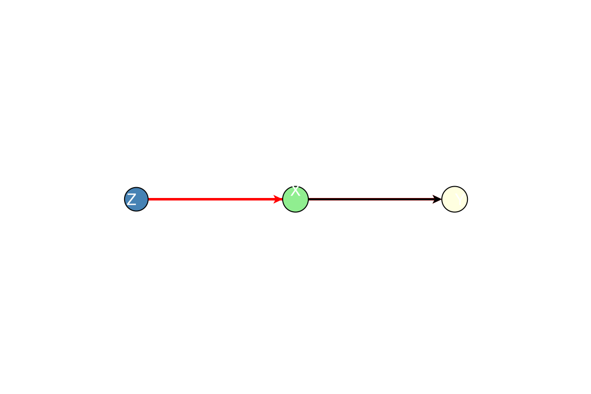
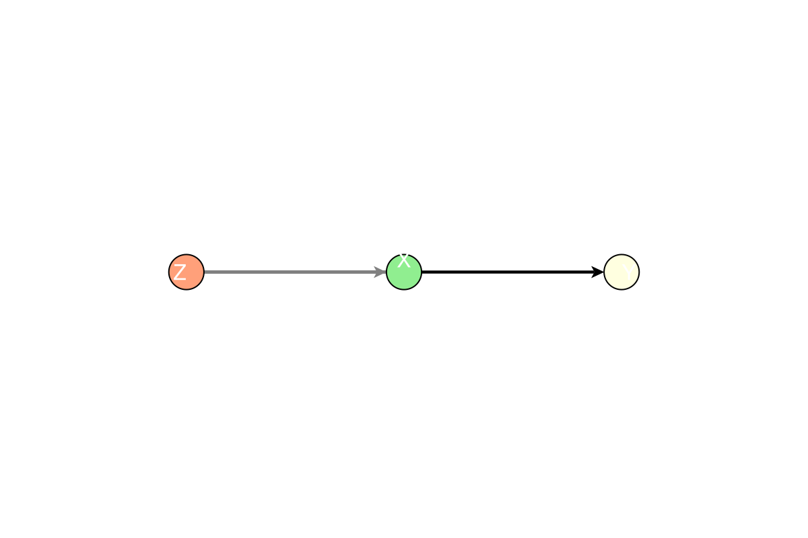
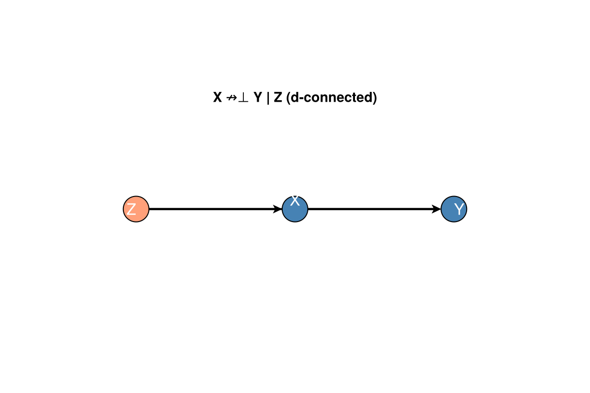
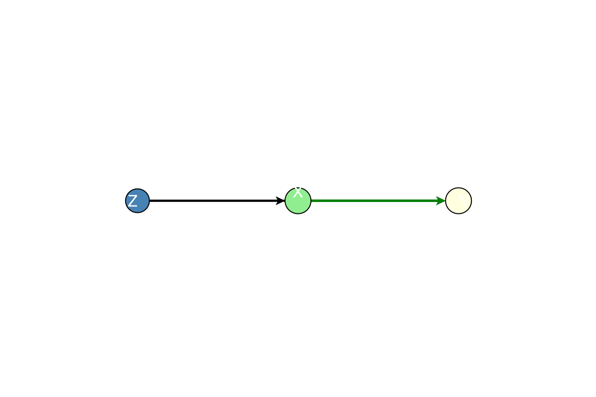

Causal Analysis
DAGMakie provides algorithms for d-separation testing, path finding, and adjustment set computation.
using Graphs, DAGMakie, CairoMakie
g, labels = confounding_graph(["Z", "X", "Y"])Path Finding
All Paths
Find all paths between two nodes, ignoring edge direction:
paths = find_all_paths(g, 2, 3) # All paths from X to Y
for path in paths
println(path.nodes) # Node sequence
println(path.directions) # Edge directions (:forward/:backward)
end[2, 3]
[:forward]
[2, 1, 3]
[:backward, :forward]Directed (Causal) Paths
Find paths following edge direction only:
causal_paths = find_directed_paths(g, 2, 3) # X → ... → Y
println(length(causal_paths), " directed path(s)")1 directed path(s)Backdoor Paths
Find non-causal paths that start with an edge into the treatment:
backdoor = find_backdoor_paths(g, 2, 3) # Treatment=X, Outcome=Y
println(length(backdoor), " backdoor path(s)")1 backdoor path(s)d-Separation
Test conditional independence implied by graph structure:
# Unconditional: X and Y connected via Z
println(is_d_separated(g, 2, 3, Set{Int}())) # false
# Conditional on Z: X and Y are d-separated
println(is_d_separated(g, 2, 3, Set([1]))) # truefalse
falseCollider Example
g_col, labels_col = collider_graph(["X", "C", "Y"])
# Unconditionally: X and Y are d-separated (collider blocks)
println(is_d_separated(g_col, 1, 3, Set{Int}())) # true
# Conditioning on collider opens the path
println(is_d_separated(g_col, 1, 3, Set([2]))) # falsetrue
falseAdjustment Sets
Check Validity
# Is {Z} a valid adjustment set for X → Y?
println(is_valid_adjustment_set(g, 2, 3, Set([1]))) # true
# Empty set is not valid (backdoor path open)
println(is_valid_adjustment_set(g, 2, 3, Set{Int}())) # falsetrue
falseFind Minimal Adjustment Set
adj = find_minimal_adjustment_set(g, 2, 3)
println(adj) # Set([1]) = {Z}Set([1])List All Adjustment Sets
all_sets = list_all_adjustment_sets(g, 2, 3; max_size=3)
println(all_sets)Set{Int64}[Set([1])]Ancestors and Descendants
# Find all ancestors of a node
anc = ancestors(g, 3) # Ancestors of Y
println(anc)
# Find all descendants of a node
desc = descendants(g, 1) # Descendants of Z
println(desc)Set([2, 1])
Set([2, 3])Visualising Causal Analysis
Backdoor Paths
# Show backdoor paths (open paths highlighted)
fig, ax, p = dagplot_backdoor(g, 2, 3, nlabels=labels)
fig
# With adjustment set (shows blocked paths)
fig, ax, p = dagplot_backdoor(g, 2, 3,
adjustment = Set([1]),
nlabels = labels
)
fig
d-Separation Status
fig, ax, p = dagplot_dsep(g, 2, 3, Set([1]), nlabels=labels)
fig
Causal Paths
fig, ax, p = dagplot_causal_paths(g, 2, 3, nlabels=labels)
fig
Auto-Computed Adjustment
fig, ax, p = dagplot_adjustment(g, 2, 3, nlabels=labels)
fig
CausalDynamics.jl Integration
When CausalDynamics.jl is loaded, additional functions become available:
using DAGMakie, CausalDynamics, Graphs
# Use CausalDynamics' d-separation
CausalDynamics.d_separated(g, 2, 3, [1])
# Get the extension module
ext = Base.get_extension(DAGMakie, :DAGMakieCausalDynamicsExt)
# Comprehensive analysis
analysis = ext.causal_analysis(g, 2, 3)
# Returns: (backdoor_paths, adjustment_set, identifiable, d_separated_unconditional)
# Formatted report
ext.print_causal_analysis(g, 2, 3, nlabels=labels)